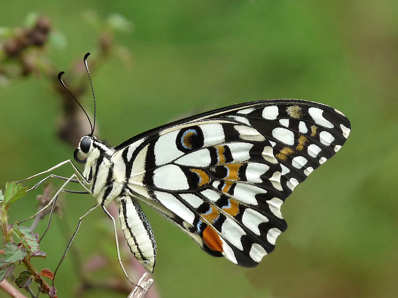

The butterfly is tailless and has a wingspan 80–100 mm. Above, the background colour is black. A broad, irregular yellow band is found on the wings above, which is broken in the case of the forewing. Besides this, the butterfly has a large number of irregular spots on the wing. The upper hindwing has a red tornal spot with blue edging around it. As the caterpillar ages, its hunger for leaf tissue continues to grow.

Detailed description as given by Charles Thomas Bingham in 1905:
"Upper side of wings has the ground colour black. The fore wing has the base below cell and basal half of latter so irrorated with yellow scales as to form more or less complete transverse dotted lines, two outwardly oblique yellow spots in cell and a curved spot at its upper apex;
a spot at base and another beyond it in interspace 8; a discal transverse series of cream-yellow spots irregular in arrangement and size extends from interspace la to 8;
the series interrupted in interspace 5 and the spot in interspace 7 double; this is followed by a sinuous postdiscal series of spots and an admarginal terminal series of smaller spots. In many specimens between the discal and postdiscal series the black ground-colour is irrorated with yellowish scales. Hind wing: base and an edging that decreases in width along the dorsal margin irrorated with yellow scales;
followed by a broad medial yellow irregular band, a sinuous postdiscal series of outwardly emarginate yellow spots and a terminal series of smaller similarly coloured spots as on the fore wing. The inner margin of the medial band is curved inwards, the outer margin is very irregular and uneven;
in the cell the band does not reach the apex, but beyond the cell there are one or more cream-yellow spots, and the black groundcolour is irrorated with yellowish scales;
finally at the tornal angle there is an oval ochraceous-red spot emarginate on its inner side in the female and in both sexes surmounted by a blue lunule; while in interspace 7 between the medial band and the postdiscal spot there is a large ocellus-like spot of the black ground-colour more or less irrorated with blue scales."